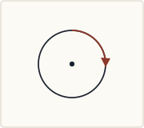

Third Period: The Projective Period¶
A Short History of Metageometry — Cayley, Klein, Lie (§§ 30–45, pp. 27–50)
§ 30. The third period abandons the metrical methods of the second, and extrudes the notion of spatial quantity¶
f. §30 · p. 2730. The third period differs radically, alike in its methods and aims, and in the underlying philosophical ideas, from the period which it replaced. Whereas everything, in the second period, turned on measurement, with its apparatus of Congruence, Free Mobility, Rigid Bodies, and the rest, these vanish completely in the third period, which, swinging to the opposite extreme, regards quantity as a perfectly irrelevant category in Geometry, and dispenses with congruence and the method of superposition. The ideas of this period, unfortunately, have found no exponent so philosophical as Riemann or Helmholtz, but have been set forth only by technical mathematicians. Moreover the change of fundamental ideas, which is immense, has not brought about an equally great change in actual procedure; for though spatial quantity is no longer a part of projective Geometry, quantity is still employed, and we still have equations, algebraic transformations, and so on. This is apt to give rise to confusion, especially in the mind of the student, who fails to realise that the quantities used, so far as the propositions are really projective, are mere names for points, and not, as in metrical Geometry, actual spatial magnitudes.
Nevertheless, the fundamental difference between this period and the former must strike any one at once. Whereas Riemann and Helmholtz dealt with metrical ideas, and took, as their foundations, the measure of curvature and the formula for the linear element—both purely metrical—the new method is erected on the formulae for transformation of coordinates required to express a given collineation. It begins by reducing all so-called metrical notions—distance, angle, etc.—to projective forms, and obtains, from this reduction, a methodological unity and simplicity before impossible. This reduction depends, however, except where the space-constant is negative, upon imaginary figures—in Euclid, the circular points at infinity; it is moreover purely symbolic and analytical, and must be regarded as philosophically irrelevant. As the question concerning the import of this reduction is of fundamental importance to our theory of Geometry, and as Cayley, in his Presidential Address to the British Association in 1883, formally challenged philosophers to discuss the use of imaginaries, on which it depends, I will treat this question at some length. But first let us see how, as a matter of mathematics, the reduction is effected.
§ 31. Cayley reduced metrical properties to projective properties, relative to a certain conic or quadric, the Absolute;¶
f. §31 · p. 2831. We shall find, throughout this period, that almost every important proposition, though misleading in its obvious interpretation, has nevertheless, when rightly interpreted, a wide philosophical bearing. So it is with the work of Cayley, the pioneer of the projective method.
The projective formula for angles, in Euclidean Geometry, was first obtained by Laguerre, in 1853. This formula had, however, a perfectly Euclidean character, and it was left for Cayley to generalize it so as to include both angles and distances in Euclidean and non-Euclidean systems alike [1].
Cayley was, to the last, a staunch supporter of Euclidean space, though he believed that non-Euclidean Geometries could be applied, within Euclidean space, by a change in the definition of distance [2]. He has thus, in spite of his Euclidean orthodoxy, provided the believers in the possibility of non-Euclidean spaces with one of their most powerful weapons. In his “Sixth Memoir upon Quantics” (1859), he set himself the task of “establishing the notion of distance upon purely descriptive principles.” He showed that, with the ordinary notion of distance, it can be rendered projective by reference to the circular points and the line at infinity, and that the same is true of angles [3]. Not content with this, he suggested a new definition of distance, as the inverse sine or cosine of a certain function of the coordinates; with this definition, the properties usually known as metrical become projective properties, having reference to a certain conic, called by Cayley the Absolute. (The circular points are, analytically, a degenerate conic, so that ordinary Geometry forms a particular case of the above.) He proves that, when the Absolute is an imaginary conic, the Geometry so obtained for two dimensions is spherical Geometry. The correspondence with Lobatchewsky, in the case where the Absolute is real, is not worked out: indeed there is, throughout, no evidence of acquaintance with non-Euclidean systems. The importance of the memoir, to Cayley, lies entirely in its proof that metrical is only a branch of descriptive Geometry.
§ 32. And Klein showed that the Euclidean or non-Euclidean systems result, according to the nature of the Absolute;¶
f. §32 · p. 2932. The connection of Cayley’s Theory of Distance with Metageometry was first pointed out by Klein [4]. Klein showed in detail that, if the Absolute be real, we get Lobatchewsky’s (hyperbolic) system; if it be imaginary, we get either spherical Geometry or a new system, analogous to that of Helmholtz, called by Klein elliptic; if the Absolute be an imaginary point-pair, we get parabolic Geometry, and if, in particular, the point-pair be the circular points, we get ordinary Euclid. In elliptic Geometry, two straight lines in the same plane meet in only one point, not two as in Helmholtz’s system. The distinction between the two kinds of Geometry is difficult, and will be discussed later.
§ 33. Hence Euclidean space appeared to give rise to all the kinds of Geometry, and the question, which is true, appeared reduced to one of convention¶
f. §33 · p. 3033. Since these systems are all obtained from a Euclidean plane, by a mere alteration in the definition of distance, Cayley and Klein tend to regard the whole question as one, not of the nature of space, but of the definition of distance. Since this definition, on their view, is perfectly arbitrary, the philosophical problem vanishes—Euclidean space is left in undisputed possession, and the only problem remaining is one of convention and mathematical convenience [5]. This view has been forcibly expressed by Poincaré: “What ought one to think,” he says, “of this question: Is the Euclidean Geometry true? The question is nonsense.” Geometrical axioms, according to him, are mere conventions: they are “definitions in disguise [6].” Thus Klein blames Beltrami for regarding his auxiliary plane as merely auxiliary, and remarks that, if he had known Cayley’s Memoir, he would have seen the relation between the plane and the pseudosphere to be far more intimate than he supposed [7]. A view which removes the problem entirely from the arena of philosophy demands, plainly, a full discussion. To this discussion we will now proceed.
§ 34. But this view is due to a confusion as to the nature of the coordinates employed¶
f. §34 · p. 3034. The view in question has arisen, it would seem, from a natural confusion as to the nature of the coordinates employed. Those who hold the view have not adequately realised, I believe, that their coordinates are not spatial quantities, as in metrical Geometry, but mere conventional signs, by which different points can be distinctly designated. There is no reason, therefore, until we already have metrical Geometry, for regarding one function of the coordinates as a better expression of distance than another, so long as the fundamental addition-equation [8] is preserved. Hence, if our coordinates are regarded as adequate for all Geometry, an indeterminateness arises in the expression of distance, which can only be avoided by a convention. But projective coordinates—so our argument will contend—though perfectly adequate for all projective properties, and entirely free from any metrical presupposition, are inadequate to express metrical properties, just because they have no metrical presupposition. Thus where metrical properties are in question, Beltrami remains justified as against Klein; the reduction of metrical to projective properties is only apparent, though the independence of these last, as against metrical Geometry, is perfectly real.
§ 35. Projective coordinates have been regarded as dependent on distance, and thus really metrical¶
f. §35 · p. 3135. But what are projective coordinates, and how are they introduced? This question was not touched upon in Cayley’s Memoir, and it seemed, therefore, as if a logical error were involved in using coordinates to define distance. For coordinates, in all previous systems, had been deduced from distance; to use any existing coordinate system in defining distance was, accordingly, to incur a vicious circle. Cayley mentions this difficulty in a note, where he only remarks, however, that he had regarded his coordinates as numbers arbitrarily assigned, on some system not further investigated, to different points. The difficulty has been treated at length by Sir R. Ball (Theory of the Content, Trans. R. I. A. 1889), who urges that if the values of our coordinates already involve the usual measure of distance, then to give a new definition, while retaining the usual coordinates, is to incur a contradiction. He says (op. cit. p. 1): “In the study of non-Euclidean Geometry I have often felt a difficulty which has, I know, been shared by others. In that theory it seems as if we try to replace our ordinary notion of distance between two points by the logarithm of a certain anharmonic ratio [9]. But this ratio itself involves the notion of distance measured in the ordinary way. How, then, can we supersede our old notion of distance by the non-Euclidean notion, inasmuch as the very definition of the latter involves the former?”
§ 36. But this is not the case, since anharmonic ratio can be projectively defined¶
f. §36 · p. 3236. This objection is valid, we must admit, so long as anharmonic ratio is defined in the ordinary metrical manner. It would be valid, for example, against any attempt to found a new definition of distance on Cremona’s account of anharmonic ratio [10], in which it appears as a metrical property unaltered by projective transformation. If a logical error is to be avoided, in fact, all reference to spatial magnitude of any kind must be avoided; for all spatial magnitude, as will be shown hereafter [11], is logically dependent on the fundamental magnitude of distance. Anharmonic ratio and coordinates must alike be defined by purely descriptive properties, if the use afterwards made of them is to be free from metrical presuppositions, and therefore from the objections of Sir R. Ball.
Such a definition has been satisfactorily given by Klein [12], who appeals, for the purpose, to v. Staudt’s quadrilateral construction [13]. By this construction, which I have reproduced in outline in Chapter III. Section A, § 112 ff., we obtain a purely descriptive definition of harmonic and anharmonic ratio, and, given a pair of points, we can obtain the harmonic conjugate to any third point on the same straight line. On this construction, the introduction of projective coordinates is based. Starting with any three points on a straight line, we assign to them arbitrarily the numbers 0, 1, ∞. We then find the harmonic conjugate to the first with respect to 1, ∞, and assign to it the number 2. The object of assigning this number rather than any other, is to obtain the value –1 for the anharmonic ratio of the four numbers corresponding to the four points [14]. We then find the harmonic conjugate to the point 1, with respect to 2, ∞, and assign to it the number 3; and so on. Klein has shown that by this construction, we can obtain any number of points, and can construct a point corresponding to any given number, fractional or negative. Moreover, when two sets of four points have the same anharmonic ratio, descriptively defined [15], the corresponding numbers also have the same anharmonic ratio. By introducing such a numerical system on two straight lines, or on three, we obtain the coordinates of any point in a plane, or in space. By this construction, which is of fundamental importance to projective Geometry, the logical error, upon which Sir R. Ball bases his criticism, is satisfactorily avoided. Our coordinates are introduced by a purely descriptive method, and involve no presupposition whatever as to the measurement of distance.
§ 37. Projective coordinates, being purely descriptive, can give no information as to metrical properties, and the reduction of metrical to projective properties is purely technical¶
f. §37 · p. 3337. With this coordinate system, then, to define distance as a certain function of the coordinates is not to be guilty of a vicious circle. But it by no means follows that the definition of distance is arbitrary. All reference to distance has been hitherto excluded, to avoid metrical ideas; but when distance is introduced, metrical ideas inevitably reappear, and we have to remember that our coordinates give no information, primâ facie, as to any of these metrical ideas. It is open to us, of course, if we choose, to continue to exclude distance in the ordinary sense, as the quantity of a finite straight line, and to define the word distance in any way we please. But the conception, for which the word has hitherto stood, will then require a new name, and the only result will be a confusion between the apparent meaning of our propositions, to those who retain the associations belonging to the old sense of the word, and the real meaning, resulting from the new sense in which the word is used.
This confusion, I believe, has actually occurred, in the case of those who regard the question between Euclid and Metageometry as one of the definition of distance. Distance is a quantitative relation, and as such presupposes identity of quality. But projective Geometry deals only with quality—for which reason it is called descriptive—and cannot distinguish between two figures which are qualitatively alike. Now the meaning of qualitative likeness, in Geometry, is the possibility of mutual transformation by a collineation [16]. Any two pairs of points on the same straight line, therefore, are qualitatively alike; their only qualitative relation is the straight line, which both pairs have in common; and it is exactly the qualitative identity of the relations of the two pairs, which enables the difference of their relations to be exhaustively dealt with by quantity, as a difference of distance. But where quantity is excluded, any two pairs of points on the same straight line appear as alike, and even any two sets of three: for any three points on a straight line can be projectively transformed into any other three. It is only with four points in a line that we acquire a projective property distinguishing them from other sets of four, and this property is anharmonic ratio, descriptively defined. The projective Geometer, therefore, sees no reason to give a name to the relation between two points, in so far as this relation is anything over and above the unlimited straight line on which they lie; and when he introduces the notion of distance, he defines it, in the only way in which projective principles allow him to define it, as a relation between four points. As he nevertheless wishes the word to give him the power of distinguishing between different pairs of points, he agrees to take two out of the four points as fixed. In this way, the only variables in distance are the two remaining points, and distance appears, therefore, as a function of two variables, namely the coordinates of the two variable points. When we have further defined our function so that distance may be additive, we have a function with many of the properties of distance in the ordinary sense. This function, therefore, the projective Geometer regards as the only proper definition of distance.
We can see, in fact, from the manner in which our projective coordinates were introduced, that some function of these coordinates must express distance in the ordinary sense. For they were introduced serially, so that, as we proceeded from the zero-point towards the infinity-point, our coordinates continually grew. To every point, a definite coordinate corresponded: to the distance between two variable points, therefore, as a function dependent on no other variables, must correspond some definite function of the coordinates, since these are themselves functions of their points. The function discussed above, therefore, must certainly include distance in the ordinary sense.
But the arbitrary and conventional nature of distance, as maintained by Poincaré and Klein, arises from the fact that the two fixed points, required to determine our distance in the projective sense, may be arbitrarily chosen, and although, when our choice is once made, any two points have a definite distance, yet, according as we make that choice, distance will become a different function of the two variable points. The ambiguity thus introduced is unavoidable on projective principles; but are we to conclude, from this, that it is really unavoidable? Must we not rather conclude that projective Geometry cannot adequately deal with distance? If A, B, C, be three different points on a line, there must be some difference between the relation of A to B and of A to C, for otherwise, owing to the qualitative identity of all points, B and C could not be distinguished. But such a difference involves a relation, between A and B, which is independent of other points on the line; for unless we have such a relation, the other points cannot be distinguished as different. Before we can distinguish the two fixed points, therefore, from which the projective definition starts, we must already suppose some relation, between any two points on our line, in which they are independent of other points; and this relation is distance in the ordinary sense [17]. When we have measured this quantitative relation by the ordinary methods of metrical Geometry, we can proceed to decide what base-points must be chosen, on our line, in order that the projective function discussed above may have the same value as ordinary distance. But the choice of these base-points, when we are discussing distance in the ordinary sense, is not arbitrary, and their introduction is only a technical device. Distance, in the ordinary sense, remains a relation between two points, not between four; and it is the failure to perceive that the projective sense differs from, and cannot supersede, the ordinary sense, which has given rise to the views of Klein and Poincaré. The question is not one of convention, but of the irreducible metrical properties of space. To sum up: Quantities, as used in projective Geometry, do not stand for spatial magnitudes, but are conventional symbols for purely qualitative spatial relations. But distance, quâ quantity, presupposes identity of quality, as the condition of quantitative comparison. Distance in the ordinary sense is, in short, that quantitative relation, between two points on a line, by which their difference from other points can be defined. The projective definition, however, being unable to distinguish a collection of less than four points from any other on the same straight line, makes distance depend on two other points besides those whose relation it defines. No name remains, therefore, for distance in the ordinary sense, and many projective Geometers, having abolished the name, believe the thing to be abolished also, and are inclined to deny that two points have a unique relation at all. This confusion, in projective Geometry, shows the importance of a name, and should make us chary of allowing new meanings to obscure one of the fundamental properties of space.
§ 38. The true connection of Cayley’s measure of distance with non-Euclidean Geometry is that suggested by Beltrami’s Saggio, and worked out by Sir R. Ball,¶
f. §38 · p. 3638. It remains to discuss the manner in which non-Euclidean Geometries result from the projective definition of distance, as also the true interpretation to be given to this view of Metageometry. It is to be observed that the projective methods which follow Cayley deal throughout with a Euclidean plane, on which they introduce different measures of distance. Hence arises, in any interpretation of these methods, an apparent subordination of the non-Euclidean spaces, as though these were less self-subsistent than Euclid’s. This subordination is not intended in what follows; on the contrary, the correlation with Euclidean space is regarded as valuable, first, because Euclidean space has been longer studied and is more familiar, but secondly, because this correlation proves, when truly interpreted, that the other spaces are self-subsistent. We may confine ourselves chiefly, in discussing this interpretation, to distances measured along a single straight line. But we must be careful to remember that the metrical definition of distance—which, according to the view here advocated, is the only adequate definition—is the same in Euclidean and in non-Euclidean spaces; to argue in its favour is not, therefore, to argue in favour of Euclid.
The projective scheme of coordinates consists of a series of numbers, of which each represents a certain anharmonic ratio and denotes one and only one point, and which increase uniformly with the distance from a fixed origin, until they become infinite on reaching a certain point. Now Cayley showed that, in Euclidean Geometry, distance may be expressed as the limit of the logarithm of the anharmonic ratio of the two points and the (coincident) points at infinity on their straight line; while, if we assumed that the points at infinity were distinct, we obtained the formula for distance in hyperbolic or spherical Geometry, according as these points were real or imaginary. Hence it follows that, with the projective definition of distance, we shall obtain precisely the formulae of hyperbolic, parabolic or spherical Geometry, according as we choose the point, to which the value +∞ is assigned, at a finite, infinite or imaginary distance (in the ordinary sense) from the point to which we assign the value 0. Our straight line remains, all the while, an ordinary Euclidean straight line. But we have seen that the projective definition of distance fits with the true definition only when the two fixed points to which it refers are suitably chosen. Now the ordinary meaning of distance is required in non-Euclidean as in Euclidean Geometries—indeed, it is only in metrical properties that these Geometries differ. Hence our Euclidean straight line, though it may serve to illustrate other Geometries than Euclid’s, can only be dealt with correctly by Euclid. Where we give a different definition of distance from Euclid’s, we are still in the domain of purely projective properties, and derive no information as to the metrical properties of our straight line. But the importance, to Metageometry, of this new interpretation, lies in the fact that, having independently established the metrical formulae of non-Euclidean spaces, we find, as in Beltrami’s Saggio, that these spaces can be related, by a homographic correspondence, with the points of Euclidean space; and that this can be effected in such a manner as to give, for the distance between two points of our non-Euclidean space, the hyperbolic or spherical measure of distance for the corresponding points of Euclidean space.
§ 39. Which provides a Euclidean equivalent for every non-Euclidean proposition, and so removes the possibility of contradictions in Metageometry¶
f. §39 · p. 3839. On the whole, then, a modification of Sir R. Ball’s view, which is practically a generalized statement of Beltrami’s method, seems the most tenable. He imagines what, with Grassmann, he calls a Content, i.e. a perfectly general three-dimensional manifold, and then correlates its elements, one by one, with points in Euclidean space. Thus every element of the Content acquires, as its coordinates, the ordinary Euclidean coordinates of the corresponding point in Euclidean space. By means of this correlation, our calculations, though they refer to the Content, are carried on, as in Beltrami’s Saggio, in ordinary Euclidean space. Thus the confusion disappears, but with it, the supposed Euclidean interpretation also disappears. Sir R. Ball’s Content, if it is to be a space at all, must be a space radically different from Euclid’s [18]; to speak, as Klein does, of ordinary planes with hyperbolic or elliptic measures of distance, is either to incur a contradiction, or to forego any metrical meaning of distance. Instead of ordinary planes, we have surfaces like Beltrami’s, of constant measure of curvature; instead of Euclid’s space, we have hyperbolic or spherical space. At the same time, it remains true that we can, by Klein’s method, give a Euclidean meaning to every symbolic proposition in non-Euclidean Geometry. For by substituting, for distance, the logarithm above alluded to, we obtain, from the non-Euclidean result, a result which follows from the ordinary Euclidean axioms. This correspondence removes, once for all, the possibility of a lurking contradiction in Metageometry, since, to a proposition in the one, corresponds one and only one proposition in the other, and contradictory results in one system, therefore, would correspond to contradictory results in the other. Hence Metageometry cannot lead to contradictions, unless Euclidean Geometry, at the same moment, leads to corresponding contradictions. Thus the Euclidean plane with hyperbolic or elliptic measure of distance, though either contradictory or not metrical as an independent notion, has, as a help in the interpretation of non-Euclidean results, a very high degree of utility.
§ 40. Klein’s elliptic Geometry has not been proved to have a corresponding variety of space¶
f. §40 · p. 3940. We have still to discuss Klein’s third kind of non-Euclidean Geometry, which he calls elliptic. The difference between this and spherical Geometry is difficult to grasp, but it may be illustrated by a simpler example. A plane, as every one knows, can be wrapped, without stretching, on a cylinder, and straight lines in the plane become, by this operation, geodesics on the cylinder. The Geometries of the plane and the cylinder, therefore, have much in common. But since the generating circle of the cylinder, which is one of its geodesics, is finite, only a portion of the plane is used up in wrapping it once round the cylinder. Hence, if we endeavour to establish a point-to-point correspondence between the plane and the cylinder, we shall find an infinite series of points on the plane for a single point on the cylinder. Thus it happens that geodesics, though on the plane they have only one point in common, may on the cylinder have an infinite number of intersections. Somewhat similar to this is the relation between the spherical and elliptic Geometries. To any one point in elliptic space, two points correspond in spherical space. Thus geodesics, which in spherical space may have two points in common, can never, in elliptic space, have more than one intersection.
But Klein’s method can only prove that elliptic Geometry holds of the ordinary Euclidean plane with elliptic measure of distance. Klein has made great endeavours to enforce the distinction between the spherical and elliptic Geometries [19], but it is not immediately evident that the latter, as distinct from the former, is valid.
In the first place, Klein’s elliptic Geometry, which arises as one of the alternative metrical systems on a Euclidean plane or in a Euclidean space, does not by itself suffice, if the above discussion has been correct, to prove the possibility of an elliptic space, i.e. of a space having a point-to-point correspondence with the Euclidean space, and having as the ordinary distance between two of its points the elliptic definition of the distance between corresponding points of the Euclidean space. To prove this possibility, we must adopt the direct method of Newcomb (Crelle’s Journal, Vol. 83). Now in the first place Newcomb has not proved that his postulates are self-consistent; he has only failed to prove that they are contradictory [20]. This would leave elliptic space in the same position in which Lobatchewsky and Bolyai left hyperbolic space. But further there seems to be, at first sight, in two-dimensional elliptic space, a positive contradiction. To explain this, however, some account of the peculiarities of the elliptic plane will be necessary.

Fig. 2 (p. 41, § 40) — Oriented circle in the two-dimensional elliptic plane.¶
The elliptic plane, regarded as a figure in three-dimensional elliptic space, is what is called a double surface [21], i.e. as Newcomb says (loc. cit. p. 298): “The two sides of a complete plane are not distinct, as in a Euclidean surface…. If … a being should travel to distance 2D, he would, on his return, find himself on the opposite surface to that on which he started, and would have to repeat his journey in order to return to his original position without leaving the surface.” Now if we imagine a two-dimensional elliptic space, the distinction between the sides of a plane becomes unmeaning, since it only acquires significance by reference to the third dimension. Nevertheless, some such distinction would be forced upon us. Suppose, for example, that we took a small circle provided with an arrow, as in the figure, and moved this circle once round the universe. Then the sense of the arrow would be reversed. We should thus be forced, either to regard the new position as distinct from the former, which transforms our plane into a spherical plane, or to attribute the reversal of the arrow to the action of a motion which restores our circle to its original place. It is to be observed that nothing short of moving round the universe would suffice to reverse the sense of the arrow. This reversal seems like an action of empty space, which would force us to regard the points which, from a three-dimensional point of view, are coincident though opposite, as really distinct, and so reduce the elliptic to the spherical plane. But motion, not space, really causes the change, and the elliptic plane is therefore not proved to be impossible. The question is not, however, of any great philosophic importance.
§ 41. The geometrical use of imaginaries, of which Cayley demanded a philosophical discussion,¶
f. §41 · p. 4141. In connection with the reduction of metrical to projective Geometry, we have one more topic for discussion. This is the geometrical use of imaginaries, by means of which, except in the case of hyperbolic space, the reduction is effected. I have already contended, on other grounds, that this reduction, in spite of its immense technical importance, and in spite of the complete logical freedom of projective Geometry from metrical ideas, is purely technical, and is not philosophically valid. The same conclusion will appear, if we take up Cayley’s challenge at the British Association, in his Presidential Address of 1883.
In this address, Professor Cayley devoted most of his time to non-Euclidean systems. Non-Euclidean spaces, he declared, seemed to him mistaken à priori [22]; but non-Euclidean Geometries, here as in his mathematical works, were accepted as flowing from a change in the definition of distance. This view has been already discussed, and need not, therefore, be further criticised here. What I wish to speak about, is the question with which Cayley himself opened his address, namely, the geometrical use and meaning of imaginary quantities. From the manner in which he spoke of this question, it becomes imperative to treat it somewhat at length. For he said (pp. 8–9):
“… The notion which is the really fundamental one (and I cannot too strongly emphasize the assertion) underlying and pervading the whole notion of modern analysis and Geometry, [is] that of imaginary magnitude in analysis, and of imaginary space (or space as the locus in quo of imaginary points and figures) in Geometry: I use in each case the word imaginary as including real…. Say even the conclusion were that the notion belongs to mere technical mathematics, or has reference to nonentities in regard to which no science is possible, still it seems to me that (as a subject of philosophical discussion) the notion ought not to be thus ignored; it should at least be shown that there is a right to ignore it.”
§ 42. Has a merely technical validity,¶
f. §42 · p. 4242. This right it is now my purpose to demonstrate. But for fear non-mathematicians should miss the point of Cayley’s remark (which has sometimes been erroneously supposed to refer to non-Euclidean spaces), I may as well explain, at the outset, that this question is radically distinct from, and only indirectly connected with, the validity or import of Metageometry. An imaginary quantity is one which involves \(\sqrt{-1}\) : its most general form is a + \(\sqrt{-1}\) b where a and b are real; Cayley uses the word imaginary so as to include real, in order to cover the special case where b = 0. It will be convenient, in what follows, to exclude this wider meaning, and assume that b is not zero. An imaginary point is one whose coordinates involve \(\sqrt{-1}\), i.e. whose coordinates are imaginary quantities. An imaginary curve is one whose points are imaginary—or, in some special uses, one whose equation contains imaginary coefficients. The mathematical subtleties to which this notion leads need not be here discussed; the reader who is interested in them will find an excellent elementary account of their geometrical uses in Klein’s Nicht-Euklid, II. pp. 38–46. But for our present purpose, we may confine ourselves to imaginary points. If these are found to have a merely technical import, and to be destitute of any philosophical meaning, then the same will hold of any collection of imaginary points, i.e. of any imaginary curve or surface.
That the notion of imaginary points is of supreme importance in Geometry, will be seen by any one who reflects that the circular points are imaginary, and that the reduction of metrical to projective Geometry, which is one of Cayley’s greatest achievements, depends on these points. But to discuss adequately their philosophical import is difficult to me, since I am unacquainted with any satisfactory philosophy of imaginaries in pure Algebra. I will therefore adopt the most favourable hypothesis, and assume that no objection can be successfully urged against this use. Even on this hypothesis, I think, no case can be made out for imaginary points in Geometry.
In the first place, we must exclude, from the imaginary points considered, those whose coordinates are only imaginary with certain special systems of coordinates. For example, if one of a point’s coordinates be the tangent from it to a sphere, this coordinate will be imaginary for any point inside the sphere, and yet the point is perfectly real. A point, then, is only to be called imaginary, when, whatever real system of coordinates we adopt, one or more of the quantities expressing these coordinates remains imaginary. For this purpose, it is mathematically sufficient to suppose our coordinates Cartesian—a point whose Cartesian coordinates are imaginary, is a true imaginary point in the above sense.
To discuss the meaning of such a point, it is necessary to consider briefly the fundamental nature of the correspondence between a point and its coordinates. Assuming that elementary Geometry has proved—what I think it does satisfactorily prove—that spatial relations are susceptible of quantitative measurement, then a given point will have, with a suitable system of coordinates, in a space of n dimensions, n quantitative relations to the fixed spatial figure forming the axes of coordinates, and these n quantitative relations will, under certain reservations, be unique—i.e., no other point will have the same quantities assigned to it. (With many possible coordinate systems, this latter condition is not realized: but for that very reason they are inconvenient, and employed only in special problems.) Thus given a coordinate system, and given any set of quantities, these quantities, if they determine a point at all, determine it uniquely. But, by a natural extension of the method, the above reservation is dropped, and it is assumed that to every set of quantities some point must correspond. For this assumption there seems to me no vestige of evidence. As well might a postman assume that, because every house in a street is uniquely determined by its number, therefore there must be a house for every imaginable number. We must know, in fact, that a given set of quantities can be the coordinates of some point in space, before it is legitimate to give any spatial significance to these quantities: and this knowledge, obviously, cannot be derived from operations with coordinates alone, on pain of a vicious circle. We must, to return to the above analogy, know the number of houses in Piccadilly, before we know whether a given number has a corresponding house or not; and arithmetic alone, however subtly employed, will never give us this information.
Thus the distinction which is important is, not the distinction between real and imaginary quantities, but between quantities to which points correspond and quantities to which no points correspond. We can conventionally agree to denote real points by imaginary coordinates, as in the Gaussian method of denoting by the single quantity (a + \(\sqrt{-1}\) b) the point whose ordinary coordinates are a, b. But this does not touch Cayley’s meaning. Cayley means that it is of great utility in mathematics to regard, as points with a real existence in space, the assumed spatial correlates of quantities which, with the coordinate system employed, have no correlates in every-day space; and that this utility is supposed, by many mathematicians, to indicate the validity of so fruitful an assumption. To fix our ideas, let us consider Cartesian axes in three-dimensional Euclidean space. Then it appears, by inspection, that a point may be situated at any distance to right or left of any of the three coordinate planes; taking this distance as a coordinate, therefore, it appears that real points correspond to all quantities from -∞ to +∞. The same appears for the other two coordinates; and since elementary Geometry proves their variations mutually independent, we know that one and only one real point corresponds to any three real quantities. But we also know, from the exhaustive method pursued, that all space is covered by the range of these three variable quantities: a fresh set of quantities, therefore, such as is introduced by the use of imaginaries, possesses no spatial correlate, and can be supposed to possess one only by a convenient fiction.
§ 43. And is capable of giving geometrical results only when it begins and ends with real points and figures¶
f. §43 · p. 4543. The fact that the fiction is convenient, however, may be thought to indicate that it is more than a fiction. But this presumption, I think, can be easily explained away. For all the fruitful uses of imaginaries, in Geometry, are those which begin and end with real quantities, and use imaginaries only for the intermediate steps. Now in all such cases, we have a real spatial interpretation at the beginning and end of our argument, where alone the spatial interpretation is important: in the intermediate links, we are dealing in a purely algebraical manner with purely algebraical quantities, and may perform any operations which are algebraically permissible. If the quantities with which we end are capable of spatial interpretation, then, and only then, our result may be regarded as geometrical. To use geometrical language, in any other case, is only a convenient help to the imagination. To speak, for example, of projective properties which refer to the circular points, is a mere memoria technica for purely algebraical properties; the circular points are not to be found in space, but only in the auxiliary quantities by which geometrical equations are transformed. That no contradictions arise from the geometrical interpretation of imaginaries, is not wonderful: for they are interpreted solely by the rules of Algebra, which we may admit as valid in their application to imaginaries. The perception of space being wholly absent, Algebra rules supreme, and no inconsistency can arise. Wherever, for a moment, we allow our ordinary spatial notions to intrude, the grossest absurdities do arise—every one can see that a circle, being a closed curve, cannot get to infinity. The metaphysician, who should invent anything so preposterous as the circular points, would be hooted from the field. But the mathematician may steal the horse with impunity.
Finally, then, only a knowledge of space, not a knowledge of Algebra, can assure us that any given set of quantities will have a spatial correlate, and in the absence of such a correlate, operations with these quantities have no geometrical import. This is the case with imaginaries in Cayley’s sense, and their use in Geometry, great as are its technical advantages, and rigid as is its technical validity, is wholly destitute of philosophical importance.
§ 44. We have now seen that projective Geometry is logically prior to metrical Geometry, but cannot supersede it¶
f. §44 · p. 4644. We have now, I think, discussed most of the questions concerning the scope and validity of the projective method. We have seen that it is independent of all metrical presuppositions, and that its use of coordinates does not involve the assumption that spatial magnitudes are measured or expressed by them. We have seen that it is able to deal, by its own methods alone, with the question of the qualitative likeness of geometrical figures, which is logically prior to any comparison as to quantity, since quantity presupposes qualitative likeness. We have seen also that, so far as its legitimate use extends, it applies equally to all homogeneous spaces, and that its criterion of an independently possible space—the determination of a straight line by two points [23]—is not subject to the qualifications and limitations which belong, as we have seen in the case of the cylinder, to the metrical criterion of constant curvature. But we have also seen that, when projective Geometry endeavours to grapple with spatial magnitude, and bring distance and the measurement of angles beneath its sway, its success, though technically valid and important, is philosophically an apparent success only. Metrical Geometry, therefore, if quantity is to be applied to space at all, remains a separate, though logically subsequent branch of Mathematics.
§ 45. Sophus Lie has applied projective methods to Helmholtz’s formulation of the axioms, and has shown the axiom of Monodromy to be superfluous¶
f. §45 · p. 4645. It only remains to say a few words about Sophus Lie. As a mathematician, as the inventor of a new and immensely powerful method of analysis, he cannot be too highly praised. Geometry is only one of the numerous subjects to which his theory of continuous groups applies, but its application to Geometry has made a revolution in method, and has rendered possible, in such problems as Helmholtz’s, a treatment infinitely more precise and exhaustive than any which was possible before.
The general definition of a group is as follows: If we have any number of independent variables \(x_{1}\) \(x_{2}\)…\(x_{n}\), and any series of transformations of these into new variables—the transformations being defined by equations of specified forms, with parameters varying from one transformation to another—then the series of transformations form a group, if the successive application of any two is equivalent to a single member of the original series of transformations. The group is continuous, when we can pass, by infinitesimal gradations within the group, from any one of the transformations to any other.
Now, in Geometry, the result of two successive motions or collineations of a figure can always be obtained by a single motion or collineation, and any motion or collineation can be built up of a series of infinitesimal motions or collineations. Moreover the analytical expression of either is a certain transformation of the coordinates of all the points of the figure [24]. Hence the transformations determining a motion or a collineation are such as to form a continuous group. But the question of the projective equivalence of two figures, to which all projective Geometry is reducible, must always be dealt with by a collineation; and the question of the equality of two figures, to which all metrical Geometry is reducible, must always be decided by a motion such as to cause superposition; hence the whole subject of Geometry may be regarded as a theory of the continuous groups which define all possible collineations and motions.
Now Sophus Lie has developed, at great length, the purely analytical theory of groups; he has therefore, by this method of formulating the problem, a very powerful weapon ready for the attack. In two papers “On the foundations of Geometry [25],” undertaken at Klein’s urgent request, he takes premisses which roughly correspond to those of Helmholtz, omitting Monodromy, and applies the theory of groups to the deduction of their consequences [26]. Helmholtz’s work, he says, can hardly be looked upon as proving its conclusions, and indeed the more searching analysis of the group-theory reveals several possibilities unknown to Helmholtz. Nevertheless, as a pioneer, devoid of Lie’s machinery, Helmholtz deserves, I think, more praise than Lie is willing to give him [27].
Lie’s method is perfectly exhaustive; omitting the premiss of Monodromy, the others show that a body has six degrees of freedom, i.e. that the group giving all possible motions of a body will have six independent members; if we keep one point fixed, the number of independent members is reduced to three. He then, from his general theory, enumerates all the groups which satisfy this condition. In order that such a group should give possible motions, it is necessary, by Helmholtz’s second axiom, that it should leave invariant some function of the coordinates of any two points. This eliminates several of the groups previously enumerated, each of which he discusses in turn. He is thus led to the following results:
In two dimensions, if free mobility is to hold universally, there are no groups satisfying Helmholtz’s first three axioms, except those which give the ordinary Euclidean and non-Euclidean motions; but if it is to hold only within a certain region, there is also a possible group in which the curve described by any point in a rotation is not closed, but an equiangular spiral. To exclude this possibility, Helmholtz’s axiom of Monodromy is required.
In three dimensions, the results go still more against Helmholtz. Assuming free mobility only within a certain region, we have to distinguish two cases: Either free mobility holds, within that region, absolutely without exception, i.e. when one point is held fast, every other point within the region can move freely over a surface: in this case the axiom of Monodromy is unnecessary, and the first three axioms suffice to define our group as that of Euclidean and non-Euclidean motions. Or free mobility, within the specified region, holds only of every point of general position, while the points of a certain line, when one point is fixed, are only able to move on that line, not on a surface: when this is the case, other groups are possible, and can only be excluded by Helmholtz’s fourth axiom.
Having now stated the purely mathematical results of Lie’s investigations, we may return to philosophical considerations, by which Helmholtz’s work was mainly motived. It becomes obvious, not only that exceptions within a certain region, but also that limitation to a certain region, of the axiom of Free Mobility, are philosophically quite impossible and inconceivable. How can a certain line, or a certain surface, form an impassable barrier in space, or have any mobility different in kind from that of all other lines or surfaces? The notion cannot, in philosophy, be permitted for a moment, since it destroys that most fundamental of all the axioms, the homogeneity of space. We not only may, therefore, but must take Helmholtz’s axiom of Free Mobility in its very strictest sense; the axiom of Monodromy thus becomes mathematically, as well as philosophically, superfluous. This is, from a philosophical standpoint, the most important of Lie’s results.
Footnotes